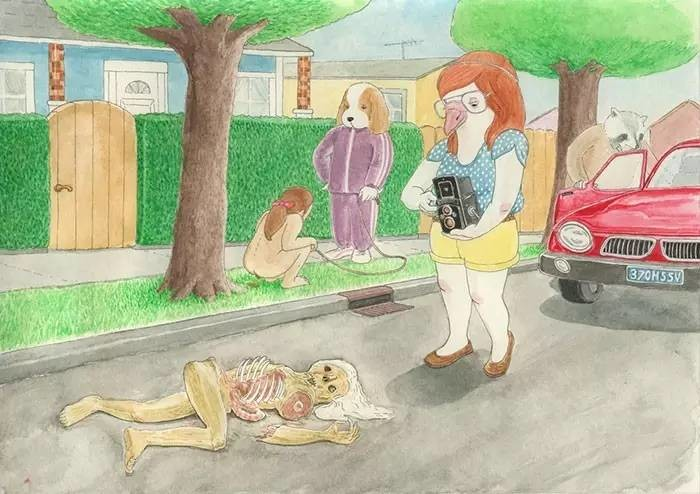
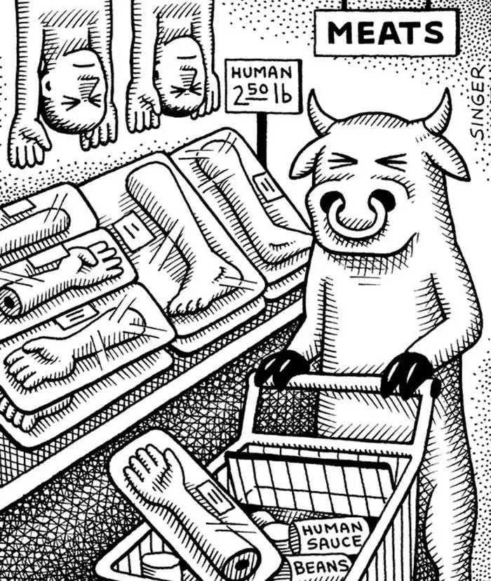
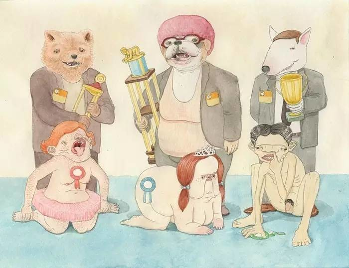

我在几个月之前开始不吃肉，打算也做一名素食主义者。为什么我突然就发神经呢，一半是来自朋友的影响，一半是自己的感悟。
我印度朋友（Dinseh parmar）跟我说，他是素食主义者，（他弟弟说他自己甚至连鸡蛋都不吃）当时使我震撼，也是第一次对素食主义者这个词有了较为深刻的印象。
他给我讲了很多，关于印度人怎么不吃肉，为什么不吃肉，后来他给我看了一个YouTube的视频，关于一个小女孩对于吃肉行为的想法，小女孩哭泣的说，它们那么可怜，为什么要吃它们。这让我想起了电影寄生兽中的一段对话，（人类被外星生物寄生，外星生物选择吃人来填饱肚子。所有形成了表面的人吃人现象) 外星寄生体说，为什么你们人类吃动物不觉得残忍呢，我也只是为了生存！ 是啊，值得深思。有人说人类是杂食动物。但是人类是以素食为主，肉食为辅的！关于人类到底该不该吃肉，吃肉有哪些危害，希望阅读这篇文章转自360图书馆之后看过海豚湾之类的（包括剥狗皮的）视频之后，我感到十分的震撼，人类这么残杀这个地球上活生生的生物，和杀人有什么区别转自知乎：动物眼中的人类。
之后我就决定成为一名素食主义者，一是为了生命，二是为了自己和信仰，三是为了未来。希望看完文章，你有所感触，那么欢迎加入素食主义者。我们不去刻意伤害生命，我们只是去捍卫他们在地球生活的权利！（图片转自网络）   